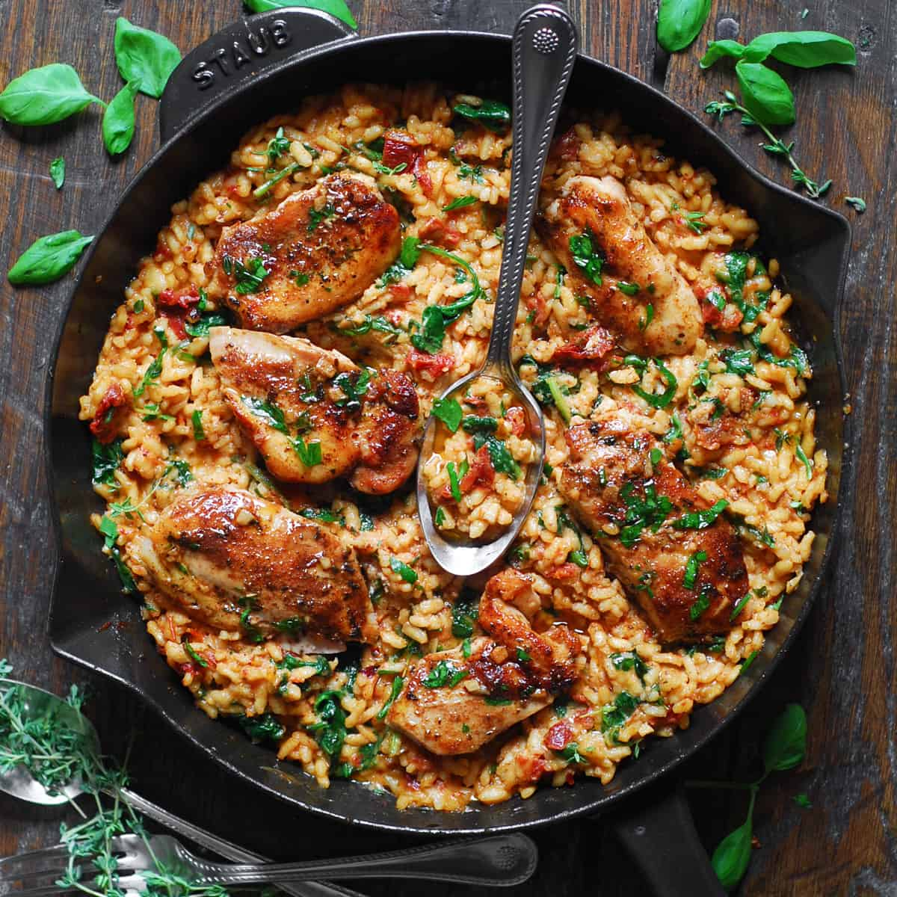

Back to Recipes
Chicken Risotto

Ingredients
- 1 chicken breast
- 1 cup of risotto rice
- 1 onion
- 1 clove of garlic
- 1 litre of chicken stock
- 1 glass of white wine
- 1 tablespoon of butter
- 1 tablespoon of olive oil
- 1 pinch of salt
- 1 pinch of pepper
- 1 pinch of parsley
Method
- Heat the olive oil and butter in a large pan.
- Finely chop the onion and garlic, then add to the pan. Cook until softened.
- Cut the chicken breast into small pieces and add to the pan. Cook until browned.
- Add the risotto rice and stir well to coat the grains.
- Pour in the white wine and cook until it has evaporated.
- Gradually add the chicken stock, one ladle at a time, stirring continuously until the liquid is absorbed before adding more.
- Continue this process until the rice is cooked and creamy.
- Season with salt, pepper, and parsley to taste.
- Serve hot and enjoy your chicken risotto.